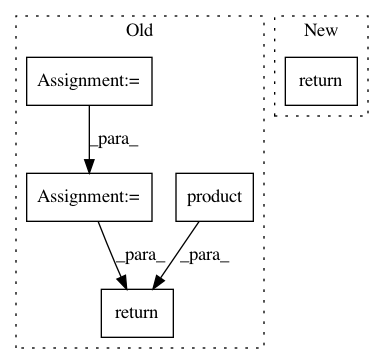

90787dc646305306274fb85fefbfa49d7458cda8,cde/density_estimator/LSCDE.py,LSConditionalDensityEstimation,pdf,#LSConditionalDensityEstimation#Any#Any#,93
Before Change
X_normalized, Y_normalized = self._normalize(X, Y)
p = np.dot(self.alpha.T, self._gaussian_kernel(X_normalized, Y_normalized).T)
p_normalization = (np.sqrt(2*np.pi) * self.bw) ** self.ndim_y * np.dot(self.alpha.T, self._gaussian_kernel(X_normalized).T)
return np.squeeze(p / p_normalization / np.product(self.y_std))
def predict_density(self, X, Y=None, resolution=50):
Computes conditional density p(y|x) over a predefined grid of y target values
After Change
n_samples = X.shape[0]
if n_samples > MULTIPROC_THRESHOLD:
return execute_batch_async_pdf(self._pdf, X, Y, n_jobs=self.n_jobs)
else:
return self._pdf(X, Y)
def predict_density(self, X, Y=None, resolution=50):
In pattern: SUPERPATTERN
Frequency: 3
Non-data size: 5
Instances
Project Name: freelunchtheorem/Conditional_Density_Estimation
Commit Name: 90787dc646305306274fb85fefbfa49d7458cda8
Time: 2019-01-16
Author: jonas.rothfuss@gmx.de
File Name: cde/density_estimator/LSCDE.py
Class Name: LSConditionalDensityEstimation
Method Name: pdf
Project Name: quantumlib/Cirq
Commit Name: 010580845043ef751687b0ab34f694939a2fa4f5
Time: 2020-09-17
Author: kevinjefferysung@gmail.com
File Name: cirq/study/sweepable.py
Class Name:
Method Name: to_sweeps
Project Name: freelunchtheorem/Conditional_Density_Estimation
Commit Name: 33ee09c30ce5979b5f5074e08510a31ef5fa663c
Time: 2019-01-30
Author: jonas.rothfuss@gmx.de
File Name: cde/density_estimator/LSCDE.py
Class Name: LSConditionalDensityEstimation
Method Name: _pdf